附加品
共 981 个附加品 · 第 6/7 页
| 名称 | 稀有度 | 效果 | 所属 |
|---|---|---|---|
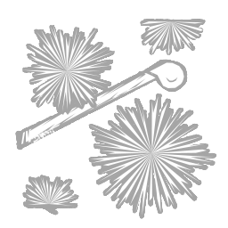 线香花火 Senko Hanabi |
精贵 | 照亮夏夜、展现生命中转瞬即逝之美的细长烟火。相位步结束后，残壳会爆炸，并封锁其位置4米范围内的所有翻越点，持续5秒。 | 怨灵 |
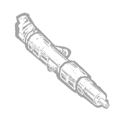 血清素注射器 Serotonin Injector |
精贵 | 一种能略微放松使用者的激素，用于需要潜行之时。在丧尸以任何方式被摧毁后，赋予不可侦测状态效果，持续15秒。 | 复仇女神 |
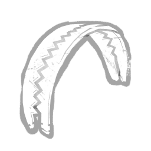 锯齿钳口 Serrated Jaws |
罕见 | 这些替换用的捕兽夹爪装有锯齿状刀刃，咬合时会造成极其严重的开放性伤口。被捕兽夹弄伤的逃生者会持续受到流血状态效果的影响，直至完全痊愈。「如同凶猛的野兽，它能嗅到并追踪血液的气息。」 | 设陷者 |
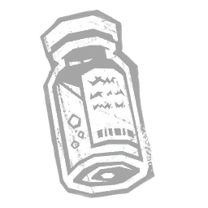 血清小瓶 Serum Vial |
传说 | “该物质的分子结构在实验室中合成，但其效果永远无法被复制。”进入可见气场幻影的范围时，逃生者会受到以下效果影响：施加疲惫状态效果，持续 15 秒。 | 未知者 |
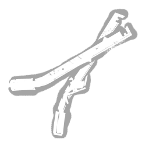 布夹工具 Setting Tools |
精贵 | 专门设计用于快速、轻松地放置捕兽夹的特制工具。显著提高捕兽夹的放置速度。 | 设陷者 |
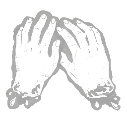 断手 Severed Hands |
传说 | Carmina 被切断的双手，在她死前不久从手臂上砍下。这景象令她与她的守护者们陷入彻底的暴怒。使 3 米内靠近群鸦缠身逃生者的逃生者也被群鸦缠身。「你现在还怎么画画？」——兜帽人 | 艺术家 |
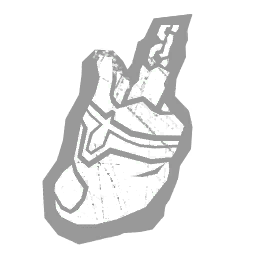 断趾 Severed Toe |
传说 | 阿迪里斯腐烂的断趾，以线穿起，作为护身符佩戴于颈间。散发着邪恶的力量。使逃生者进行交互时获得的感染量增加50%。 | 瘟疫 |
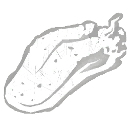 断舌 Severed Tongue |
传说 | Carmina 被切断的舌头，在她死前不久从口中割下。这景象不仅点燃她的怒火，也激怒她的鸦群。使你派出阴郁之鸦后的减速时间减少 -0.5 秒。「你现在还怎么念诗？」——兜帽人 | 艺术家 |
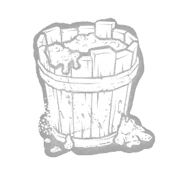 下水道污泥 Sewer Sludge |
精贵 | 德赛斯一家试图穿越城市下水道逃脱时沾满全身的恶心黏稠混合物。移除附着在身上的维克多所需时间增加 +2 秒。 | 双胞胎 |
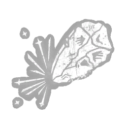 磨尖的燧石 Sharpened Flint |
传说 | "当在地图附近触发时，新的符印出现在意想不到的位置。" 修改地图并赋予以下效果： 获得追踪图腾气场位置的能力。 | |
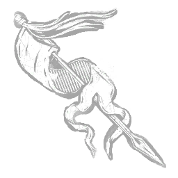 磨亮的马鞍 Sharpened Mount |
精贵 | 站在守卫连队的军旗面前，就是站在生死之间。军旗的生成持续时间增加15%。 | 骑士 |
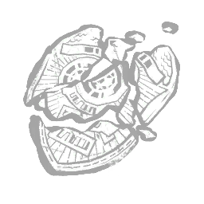 碎裂的S.T.A.R.S.徽章 Shattered S.T.A.R.S. Badge |
活动 | 浣熊市希望的象征，已彻底毁灭。每当一台发电机完成时，丧尸的移动速度增加+1.5米/秒，持续60秒。“S.T.A.R.S...”——复仇邪神 | 复仇女神 |
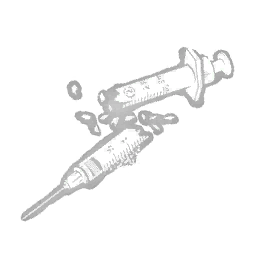 碎裂注射器 Shattered Syringe |
稀有 | 破碎生活方式的象征。追忆过去的自我使她的决心更加坚定。伏击冲刺未命中后的冷却时间缩短-10%。 | 猪女 |
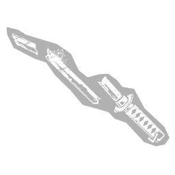 碎裂胁差 Shattered Wakizashi |
精贵 | 一柄家传刀刃的碎片，被 Kazan 在暴怒中摧毁。使血之狂怒的被动充能速率提高 +0.2 c/s。 | 鬼武者 |
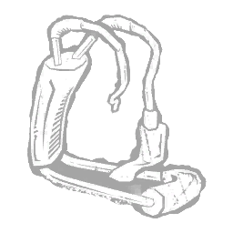 碎裂腕式火箭 Shattered Wrist Rocket |
罕见 | "一把曾经威力强大的弹弓，如今已破败不堪。" 修改遁地攻击，效果：遁地攻击产生的爆炸可破坏木板与发电机。 | 先驱者 |
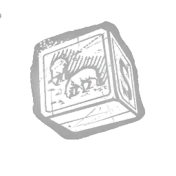 绵羊积木 Sheep Block |
稀有 | 一块蓝白相间的木块，上面绘着两只羔羊在吃草，还有一个字母“S”。使闹钟的冷却时间增加 +10%。 | 梦魇 |
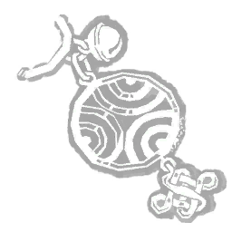 幸福护身符 Shiawase Amulet |
稀有 | 一个令人快乐而热情的护身符。使相位步的持续时间增加0.5秒。 | 怨灵 |
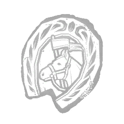 闪亮别针 Shiny Pin |
罕见 | 一个被破坏得面目全非却打磨得光鲜亮丽的铜销钉。从特别难缠的猎物身上掠夺而来。蓄力投掷飞斧时的移动速度提高 +5%。 | 女猎手 |
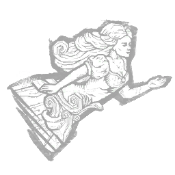 船首雕像 Ship Figurehead |
传说 | 从另一艘船船艏撕下的战利品。猎犬师的恐惧范围会根据猎犬的位置而变化：猎犬跟随在侧时，恐惧范围增加 +8 米；猎犬外出时，恐惧范围减少 -8 米。 | 猎犬主人 |
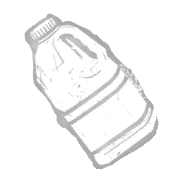 店铺润滑油 Shop Lubricant |
精贵 | 专为电锯调配的润滑油。特殊添加剂可防止润滑油飞溅。当恐怖半径范围内没有其他逃生者时，"光环：布巴的电锯"的持续时间缩短20秒。 | 食人魔王 |
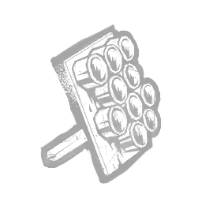 定向扬声器 Shotgun Speakers |
罕见 | 无人机能够将高频噪音长距离定向发射，并聚焦于单个目标，使其暂时分心而无暇顾及危险。被爪钩陷阱困住的逃生者不再收到即将发生技能检验的警告声。 | 骷髅商人 |
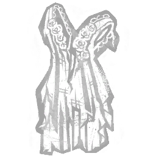 撕碎的长袍 Shredded Gown |
活动 | 当她的身体燃烧时，她撕扯着自己的衣物和皮肉。使用“实体编织”技能时，解锁你的气场解读能力：发光真菌周围8米内的气场会暴露5秒。 | 浮屠鬼 |
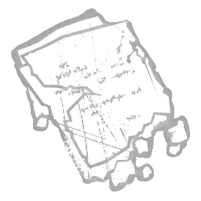 碎纸条 Shredded Notes |
罕见 | 塔尔博特笔记的残页，其中仍含有一些宝贵信息。每个力量印记的充能时间减少 -0.33 秒。 | 枯萎者 |
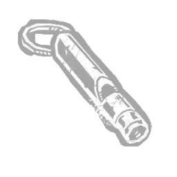 尖锐哨声 Shrill Whistle |
罕见 | “高亢的尖叫声让 | |
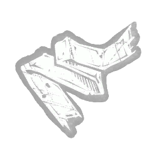 消音布 Silencing Cloth |
活动 | 五岁的夏洛特会塞进嘴里的一条粗糙布条。女巫猎人靠近时，它能阻止她尖叫。从休眠状态醒来后，夏洛特获得无法侦测状态效果，持续 20 秒。「我不再喜欢这个游戏了，母亲……」——夏洛特·德赛斯 | 双胞胎 |
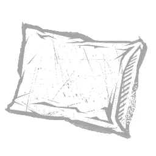 丝绸枕头 Silk Pillow |
精贵 | 当你想用丝滑柔嫩的触感闷死目标时使用。永久使你的恐惧范围-6米。将砍剁的充能时间提升至其默认时长的150%。 | 好人 |
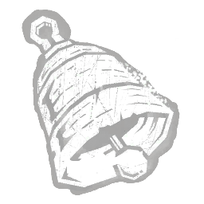 银铃 Silver Bell |
精贵 | 乌鸦喜欢的一件闪亮小饰品。铃铛的叮当声对除了卡米娜以外的所有人都是干扰。被乌鸦群包围的逃生者受到浑然不觉状态效果影响。 | 艺术家 |
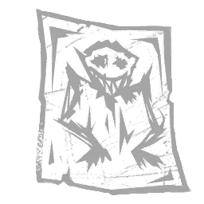 素描草稿 Sketch Attempt |
稀有 | “受害者的孩子在车站拿到了纸和蜡笔，等待父亲来接他。”处于 UVX 投射物爆炸区域内的逃生者会受到以下效果影响：施加浑然不觉状态效果，持续 20 秒。 | 未知者 |
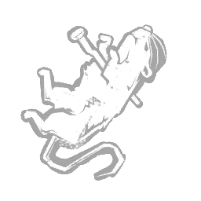 串起的老鼠 Skewered Rat |
罕见 | 解决棉花家鼠患问题的粗糙办法。附身锁链攻击的冷却时间减少 -0.45 秒。 | 地牢修女 |
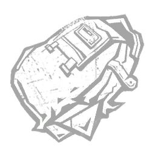 被划破的背包 Slashed Backpack |
罕见 | "当徒步旅行者从山口获救时，她坚称她的同伴绝不会独自走失。"用 UVX 投射物击中幻觉会触发以下效果：使幻觉瓦解，并创造一个爆炸区域。你下一个幻觉的生成计时器缩短 -65%。 | 未知者 |
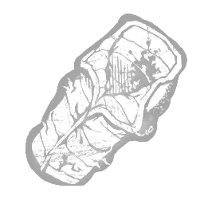 睡袋 Sleeping Bag |
罕见 | “一个绝对糟糕的、无法躲避杀手的地方。”在「无所不在的邪恶」状态下抓起钩刺后，距离任何钩子10米内的逃生者将被暴露，持续5秒。 | 杀戮者 |
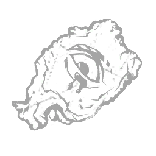 弗兰克切片 Slice of Frank |
精贵 | 弗兰克·卡顿遭受塞诺比斯折磨后留下的一块脸皮。幸存者携带哀嚎魔方时受到疲惫状态影响。“塞诺比斯给了我超越极限的体验。痛苦与愉悦，不可分割。” ——弗兰克·卡顿 | 地牢修女 |
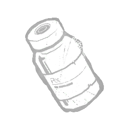 缓释毒素 Slow-Release Toxin |
精贵 | 反向捕兽夹的改装：一种不会致命的毒药，但会削弱身体，使人在任何费力动作后都几乎无法完全恢复。被反向捕兽夹夹住的逃生者将受到以下效果影响：赋予疲惫状态效果。 | 猪女 |
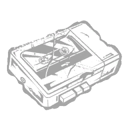 砸烂的卡座 Smashed Cassette Deck |
罕见 | "他们曾用音乐逃脱亨利的魔掌。没有它，他们将毫无胜算。" 比赛开始时，所有逃生者发出尖叫声。所有逃生者初始拥有一枚碎界者印记。碎界者首次激活时，所有逃生者失去其碎界者印记。地图上出现的祖父时钟数量减少1个。 | 先驱者 |
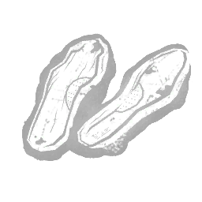 臭鞋垫 Smelly Inner Soles |
精贵 | 发霉的鞋垫，为疲惫的双脚带来舒适。补充瓶子期间，你获得以下效果：移动速度提高+15%。 | 小丑 |
| 笑脸别针 Smiley Face Pin | 稀有 | 看起来友善的明黄色按钮，用作一种讽刺的表态。求生者自我治疗后会受到失明状态效果，持续60秒。 | 军团 |
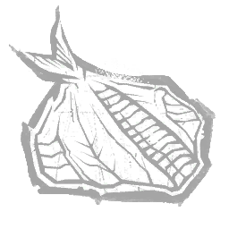 烟熏鲷鱼 Smoked Snapper |
罕见 | 一种富含蛋白质的食物，经妥善保存以确保在漫长远征中保持品质。力量充能时间减少 -5%。 | 猎犬主人 |
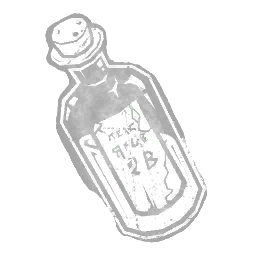 蛇油 Snake Oil |
稀有 | 从流动商贩那里购得的油与萃取物酊剂。据称能治愈你的一切病痛。使救赎者的收回速度提升 +2.5%。 | 死神之枪 |
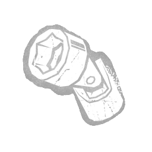 套筒转环 Socket Swivels |
罕见 | “弯钩能为够不到的螺栓提供弯折与灵活性，深入机械装置内部。”可改装工具箱，获得以下效果：修理速度+30%。 | |
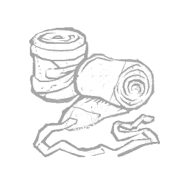 士兵绑腿 Soldier's Puttee |
活动 | 取自一名死去士兵的绷带。为脚踝和小腿提供保护与支撑。在没有斧头时，使女猎手的移动速度提升至 4.6 米/秒。 | 女猎手 |
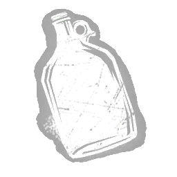 溶剂壶 Solvent Jug |
罕见 | 一种刺激性化学挥发性化合物，会刺激呼吸道，但能增强“余兴解毒剂”的吸收。修改解毒剂，获得以下效果：振奋状态的持续时间增加1秒。 | 小丑 |
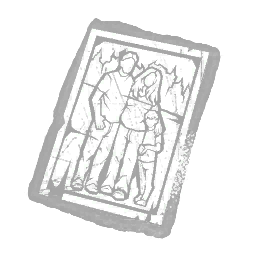 索玛家族照片 Soma Family Photo |
传说 | "一件让人沉溺于幻想过去的情感物件。" 受到生物舱时空滑流影响的逃生者会承受以下效果：施加-3%的受阻状态效果，持续6秒。"你对幻象的执念就是弱点。"——HUX-A7-13 | 奇点 |
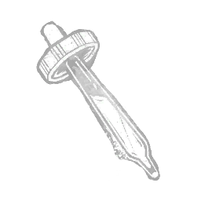 灵魂化学品 Soul Chemical |
传说 | 从近期死亡的逃生者松果体中挤出的化学物质。冲刺的初始移动速度提高 +5%。“……疑似会导致神经节律活动的非典型改变。”——未署名的神秘学派文献 | 枯萎者 |
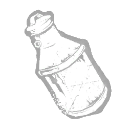 变质牛奶 Soured Milk |
稀有 | 一个装着早已变酸牛奶的金属奶瓶。维克多虽然吵闹，但看到食物时便会安静下来。维克多的尖啸半径增加 +2 米。 | 双胞胎 |
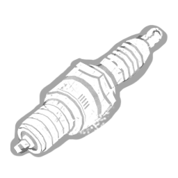 火花塞 Spark Plug |
稀有 | 适用于电锯的全新火花塞。充能所需时间减少0.5秒。 | 食人魔王 |
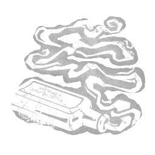 痉挛性喘息 Spasmodic Breath |
精贵 | 从“坏人”身上偷来的抽动且颤抖的呼吸。在护士的触碰下会剧烈地搏动和跳动。用特殊攻击击中逃生者将在60秒内造成以下效果：将你的移动速度提升至4.6米/秒。禁用你的力量。 | 女护士 |
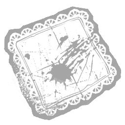 飞溅血点手帕 Spattered Handkerchief |
精贵 | 一个表明事态严重不对劲的迹象出现了，但她选择视而不见。一旦逃生门被打开，“溅血手帕”会触发以下效果：使所有剩余逃生者遭受“水蛭状态I”。使所有剩余的发光真菌开始腐烂。激活“实体编织”不再生成新的发光真菌。 | 浮屠鬼 |
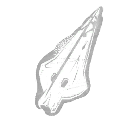 矛头 Spearhead |
罕见 | 一截锋利的锈蚀矛尖。上面沾着上一名受害者的血迹。从赎罪之笼中救援他人的逃生者会受到以下效果影响：其气场暴露8秒。 | 刽子手 |
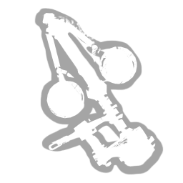 限速器 Speed Limiter |
稀有 | 一种限制小型发动机一次可吸入燃油量的机械装置，迫使其保持恒定且安全的速度。电锯命中得分事件（狠毒类别）获得+100%额外血点。被皮脸的电锯击中的逃生者只会损失一个健康状态。 | 食人魔王 |
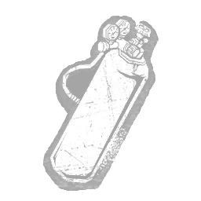 耗尽的氧气罐 Spent Oxygen Tank |
精贵 | "没有空气呼吸，有机体无法存活太久。" 受到时空滑流影响的逃生者会承受以下效果：施加疲惫状态效果，持续6秒。 | 奇点 |
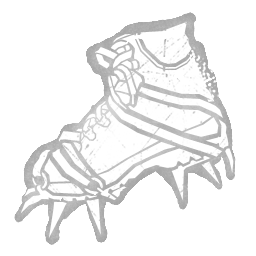 钉刺靴 Spiked Boots |
传说 | 装有绑带式金属片的靴子，金属片会插入泥土中，使每一步更加稳定可控。电锯冲刺期间的转向速度提高 +30%。 | 电锯莽夫 |
| 钉刺项圈 Spiked Collar | 精贵 | 佩戴在参战犬身上的危险配饰。被猎犬抓住时受伤的逃生者将受到出血与重伤状态效果影响，持续60秒。 | 猎犬主人 |
| 陀螺 Spinning Top | 传说 | 双胞胎共用的一个陀螺，但维克多却想据为己有。他明白了只要紧紧抓住并大声尖叫，就能得到想要的东西。被扑袭击中的逃生者会掉落所携带的道具。「嘘……嘘……那就归你了吧。」——夏洛特·德赛斯 | 双胞胎 |
| 鹿角精 Spirit of Hartshorn | 精贵 | 一种由氨组成的刺激性化合物。只需闻一下，就足以让最迟钝的头脑也清醒过来。修改解毒剂，获得以下效果：毒气云的尺寸和扩散范围增加20%。 | 小丑 |
| 擦鞋布 Spit Polish Rag | 稀有 | 一块肮脏的粗麻布。在枪战白热化之际，单凭口水与蛮劲便足以擦拭干净鱼枪。使救赎者未命中射击的冷却时间缩短 -0.25 秒。 | 死神之枪 |
| 碎裂船壳 Splintered Hull | 传说 | 一艘载有 Renjiro Yamaoka 的船只的碎片。尽管希望渺茫，这位传奇武士似乎幸存了下来。受伤逃生者产生血球的频率提高 +33%。当逃生者进行特定交互时，产生的血球数量增加 +1。「欲行诡计，先独自谋划。」—— Renjiro 箴言 7:9 | 鬼武者 |
| 变质食物 Spoiled Meal | 罕见 | 一堆被蟑螂啃食过的霉菌。或许是弗兰克·卡顿神秘失踪的迹象……附身锁链的最大射程增加 +2 米。 | 地牢修女 |
| 海绵 Sponge | 罕见 | 一块普通海绵，用来吸收多余的血液，方便处理伤口。治疗技能检验的完美成功区域扩大20%。 | |
| 弹簧夹 Spring Clamp | 罕见 | 实用工具，可夹住软管或固定电线，防止损坏或受伤。在修理发电机工具箱时，你获得以下效果：与修理互动相关的所有噪音的可听范围-8米。 | |
| 望远镜 Spyglass | 罕见 | 用于搜寻目之所寻，无论距离多远。猎犬感知结束后，所揭示的气场仍会持续显现3秒。 | 猎犬主人 |
| 刺伤研究 Stab Wounds Study | 传说 | 从奥尔蒙德公共图书馆偷来的印刷医学论文，将一项关于病灶与刺伤的研究庸俗化。光环在自我治疗后4秒。 | 军团 |
| 枯萎之杖 Staff of Withering | 精贵 | 其死灵力量使目标更接近死亡。每当逃生者进入“驱散法球”的半径范围，便受到以下效果影响：被施加“疲惫”状态效果，持续30秒。 | 巫妖 |
| 彩绘玻璃壁画 Stained Glass Mural | 稀有 | "一种曾出现在克里尔家门上的图案。如今它令另一扇门蒙上阴影。" 修改颠倒世界，效果：处于冷却期间时，破坏木板和可破坏墙壁可使该冷却时间减少12秒。 | 先驱者 |
| 过期饼干 Stale Biscuit | 精贵 | 一块坚硬的无酵饼干，是玛德琳从小镇集市上偷来的。虽然不算多，但比大多数餐食要好。使扑袭的冷却时间减少0.4秒。 | 双胞胎 |
| 椋鸟羽毛 Starling Feather | 罕见 | 一根带有翠绿光泽的黑色羽毛，触感非常柔软。你获得以下效果：投掷瓶子后的冷却时间减少50%。 | 小丑 |
| 钢头靴 Steel Toe Boots | 稀有 | 鞋头加固的靴子，可提供撞击保护。电锯冲刺中撞到障碍物后的冷却时间减少 -10%。 | 电锯莽夫 |
| 远程拾音器 Stereo Remote Mic | 罕见 | 一项允许增强三维音频追踪的升级。无人机失效状态的持续时间缩短至默认值的85%。 | 骷髅商人 |
| 粘衬里 Sticky Lining | 罕见 | 一层恶臭粘稠的覆盖物，覆盖并扩展了跨维度隧道。激活的传送门作用范围 +2.5 米。 | 俄摩拉虫 |
| 粘性含片 Sticky Lozenge | 稀有 | “一片润喉的简单药片，常在试镜前服用。”修改喷吐并赋予以下效果：蓄力时显示冲击区域的预览。 | 浮屠鬼 |
| 粘性沥青 Sticky Pitch | 稀有 | 保持船只处于最佳状态的必备物资。猎犬大师沿搜索路径行走时的额外移动速度提升+2%。 | 猎犬主人 |
| 粘腻汽水瓶 Sticky Soda Bottle | 罕见 | 味道甜腻，标签上只沾了一点血迹。修改解毒剂，获得以下效果：急速状态效果的强度增加2%至16%。 | 小丑 |
| 静物乌鸦 Still Life Crow | 罕见 | 一幅死乌鸦的墨水画。每一道黑色线条都能感受到卡米娜对它的死的悲伤。闲置凶鸦消散前的计时器增加+4秒。 | 艺术家 |
| 缝制布袋 Stitched Bag | 传说 | 用粗糙手法将各种皮革碎片缝合在一起制成的巨大袋子。开局时额外携带2个捕兽夹。捕兽夹携带上限增加2个。 | 设陷者 |
| 偷来的速写本 Stolen Sketch Book | 精贵 | 一本速写本，里面的画稿想象力丰富、意境 evocative，或者说略显古怪。让被连锁狂野挥击击中的逃生者掉落其携带的所有物品 | 军团 |
| 剃刀 Straight Razor | 传说 | 当一次死里逃生需要真的、真的擦身而过时使用。被砍剁攻击命中的逃生者将获得流血与伤残状态效果，持续80秒。 | 好人 |
| 彩带 Streamers | 罕见 | “员工们会把它们扔到椽子上作为快速装饰。”在穿越安保门时，你获得以下效果：移动速度提高 +15%。 | 机械人偶 |
| 频闪灯 Strobing Light | 稀有 | 训练得当，它能让人更容易被暗示。当躲猫猫模式处于冷却中时，使你的恐惧范围-8米。 | 好人 |
| 强力螺旋弹簧 Strong Coil Spring | 稀有 | 一根粗大沉重的盘簧，能大幅增强捕兽夹的束缚力。略微增加捕兽夹的挣脱难度（2.5%）。略微增加捕兽夹的救援时间（12%）。略微增加捕兽夹的放置时间（25%）。影响所有捕兽夹。 | 设陷者 |
| 时尚墨镜 Stylish Sunglasses | 精贵 | 一副椭圆形太阳镜，散发着从容与-cool的气质。其有色镜片增添内敛的魅力。你周围24米范围内的灵气会被你看见。 | 军团 |
| 止血剂 Styptic Agent | 传说 | “一种具有凝血特性的白色粉末。将药剂敷在伤口上以止血。”修改医疗箱：个人治疗行为效率提高15%。 | |
| 硫酸小瓶 Sulphuric Acid Vial | 精贵 | 一种稀薄透明的可燃液体，吸入后会麻痹意识。受到药酒折磨的逃生者会遭受以下效果：导致重伤状态效果，持续70秒。 | 小丑 |
| 召唤石 Summoning Stone | 传说 | 塔尔博特用这块石头将他自认为的研究成果刻在鸦片馆的墙壁上。使一次冲刺的初始持续时间增加 +0.5 秒。“死亡只是开始。” | 枯萎者 |
| 太阳镜 Sunglasses | 精贵 | 它们能抵御强光，而且看起来也很酷。修改地狱火攻击，效果如下：火焰柱数量 +1。充能时间 +25%。 | 黑暗领主 |
| 超负荷 Supercharge | 罕见 | 电池可能会稍微过热，但移除电池组的安全保护协议能让电量维持得更久。爪钩陷阱的电池寿命延长+15%。 | 骷髅商人 |
| 过热玻璃 Superheated Glass | 精贵 | “阿莱德星球毫无悔意；其领袖被放逐后，神圣之光将地表化为了玻璃。”——（《蛮族》第二卷，第12章）「狂热」的持续时间减少-20%。处于「狂热」状态时，施放的神圣之光可破坏所有可破坏墙壁/木板。以此方式破坏物体会导致12米内的逃生者尖叫并获得「异端」。 | 审判 |
| 手术缝合线 Surgical Suture | 精贵 | 一种用于闭合和固定身体组织的医疗设备。尽管非常有效，但手术缝合线使用起来很有挑战性。触发治疗技能检验的几率提高15%。完美成功治疗技能检验的进度加成提高10%。 | |
| 苏西的混音带 Susie's Mix Tape | 精贵 | 一盘令人兴奋的混音带，内含活力四射的歌曲与错综复杂的吉他solo。杀手直觉的侦测半径增加+20米。在恐怖半径中解锁额外的声音层。苏菲的混音带可与任何其他混音带附加品组合，解锁多种声音层组合。 | 军团 |
| 沼泽兰颈饰 Swamp Orchid Necklet | 精贵 | 由死去的植物制成的硬质颈饰，饰以枯萎的兰花花瓣和叶片。幻影陷阱的放置速度提高 20%。 | 女巫 |
| 秋千链条 Swing Chains | 传说 | 生锈但坚固的链条，用于牢固地固定秋千座椅。使用梦境投射能力后，封锁你所在位置16米范围内的所有窗户，持续6秒。 | 梦魇 |
| 西尔芙羽毛 Sylph Feather | 精贵 | 一根被附魔的羽毛，赋予持有者极大的敏捷。每当你破坏一块木板，风精羽毛获得 +1 枚印记，最多 5 枚：每枚印记使地狱火攻击的冷却时间缩短 -5%，最高 -25%。 | 黑暗领主 |
| T病毒样本 T-Virus Sample | 精贵 | 安布雷拉公司开发的T病毒样本，会导致受试者产生极端变异和脑损伤。使用触手攻击击中丧尸后，突变率增长+1点。 | 复仇女神 |
| TIR光学镜 TIR Optic | 罕见 | 一种可放大手电筒光束的透镜与反光镜组合。光束亮度提升 +30%。成功致盲持续时间增加 +15%。“让光将他们从黑暗的笼罩中烧灼殆尽。” | |
| 压迫者石碑 Tablet of the Oppressor | 精贵 | 一块刻有阿兹特克图案的金属牌。使用“审判之仪”时，赋予以下效果：获得无法侦测状态效果。 | 刽子手 |
| 廉价耳环 Tacky Earrings | 稀有 | 一件用塑料制成、涂成仿珍贵材料样式的廉价首饰。修改邪恶附身，效果如下：追踪时移动速度提升 +20%。 | 变形者 |
| 鲷鱼烧 Taiyaki | 稀有 | 食尸鬼永远无法吃人类的食物，但它们总能找到假装的办法。倒计时延长+5秒。 | 食尸鬼 |
| 被篡改的计时器 Tampered Timer | 传说 | 一个被人动过手脚的计时器。机械中的发条迫使齿轮加速转动。反向捕兽夹的死亡计时器缩短-20秒。 | 猪女 |
| 磁带剪辑台 Tape Editing Deck | 传说 | 玲子和龙司用来分析和复制录像带的编辑台。复制并分享录像带是唯一能逃脱诅咒的方法。使所有逃生者开局时携带一盘VHS录像带。所有逃生者必须将VHS录像带带到电视机处。放入电视机的VHS录像带气场将向你显示6秒。“在盐水中嬉戏，妖精将属于你。”——坂户录像带中隐藏的信息。 | 般若 |
| 焦油瓶 Tar Bottle | 精贵 | 一种黑色、哑光且有黏性的物质，涂抹在捕兽夹上能使其不那么显眼。使捕兽夹颜色变暗。 | 设陷者 |
| 破烂头带 Tattered Headband | 稀有 | 一件曾属于强大召唤师的法术饰品，其仍留存着昔日魔法的低语。修改“恶灵飞行”法术，令其召唤的飞行实体飞行距离延长 +4 米。 | 巫妖 |
| 破烂罩袍 Tattered Tabard | 稀有 | 披覆厚重织物，一旦锁定目标，人与自然都无法阻挡他们。使巡逻阶段持续时间延长 +8 秒。 | 骑士 |
| 纹身男的中指 Tattoo's Middle Finger | 活动 | 某位纹身壮汉的珍贵中指，带有淡淡的机油味。受到药酒或解毒剂折磨的逃生者会遭受以下效果：其气场暴露6秒。 | 小丑 |
| 泪浸手拭巾 Tear-Soaked Tenugui | 传说 | 加赞在踏上净化武士的旅途时，母亲哭着用来拭泪的那块手帕。在血之狂怒期间击倒逃生者时，力量表的惩罚减少 -4 秒 | 鬼武者 |
| 电话 Telephone | 传说 | 观看录像后，受害者会接到一通电话。当他们意识到自己只剩七天可活时，恐惧令他们僵在原地。在逃生者7米范围内显现时，逃生者受到-3%减速状态影响，持续3秒。“前几天我看了个奇怪的录像……放完之后有人给我们打来电话。像是恶作剧电话。”——大石智子 | 般若 |
| 长焦镜头 Telephoto Lens | 罕见 | 一个手动对焦镜头，可以在远处拍照时不被察觉。在你被暴露后，逃生者受到60秒的浑然不觉状态影响。 | 鬼脸 |
| 张紧弹簧 Tension Spring | 传说 | 一根高张力弹簧，被拉伸后会自动弹回原位。逃生者从捕兽夹中挣脱2秒后，捕兽夹会自动重置。 | 设陷者 |
| 龙舌兰月岩 Tequila Moonrock | 罕见 | 一款在简陋的昌原酒吧发明的饮品。成为智云的最爱。获得风格等级后，投掷速度+8%，持续10秒。 | 小丑女 |
| 野兽的印记 The Beast's Marks | 精贵 | 电锯表面布满锯齿状痕迹，那是潜伏在迷雾中的黑暗野兽留下的惩诫。它持有者的心中充斥着对失败的恐惧回忆。冲刺期间移动速度增加2%。充能所需时间增加12%。 | 食人魔王 |
| 黑山羊之卵 The Black Goat's Egg | 稀有 | 他用这本书与一位举足轻重的女人结缘。在抓取攻击期间成功完成快速时间事件可获得+100%额外血点。 | 食尸鬼 |
| 油脂 The Grease | 精贵 | 由锯木工调配的浓稠黄色黏液。用于他们房屋周边的万能润滑剂。触发"暴怒"前的临界时间增加3秒。 | 食人魔王 |
| 军团别针 The Legion Pin | 精贵 | 一枚手工缝制的纽扣，上面刻着传奇客（The Legion）的面孔。仅可用于恐吓类的悬赏挑战。求生者自我修复后将陷入骨折状态，持续 60 秒。 | 军团 |
| 汤普森家的混合燃料 The Thompsons' Mix | 精贵 | 一种由汤普森家族亲自调配、用于润滑所有机械的特殊油性物质。非超速状态下，使用电锯后的冷却时间缩短-10%。 | 电锯莽夫 |
| 剧场望远镜 Theatre Binoculars | 精贵 | “一副见证过无数悲剧的眼镜。”用肠道鞭攻击成功命中一名当前未受吸血影响的逃生者时，触发以下效果：24米内的逃生者气场对你显现6秒。 | 浮屠鬼 |
| 隔热外壳 Thermal Casing | 罕见 | 一个更厚的外壳，使使用者能够控制能量守恒。未使用电锯时，超频表的消散速度降低20%。 | 电锯莽夫 |
| 厚软木塞 Thick Cork Stopper | 罕见 | 坚固的软木塞，与表演级兴奋剂瓶完美契合。你获得以下效果：装填时间减少0.5秒。 | 小丑 |
| 浓稠焦油 Thick Tar | 稀有 | 卡米娜用于实验作品的粘稠污泥。一旦沾到皮肤上，几乎无法弄掉。被乌鸦群包围的逃生者的驱散持续时间增加+0.5秒。 | 艺术家 |
| 汤普森的私酿酒 Thompson's Moonshine | 传说 | 图标 描述 花费 此附加品已退役（此可解锁物品过去已退役，在当前游戏中不再存在。）一种由玉米酿造的烈性饮料，配方代代相传。 | 电锯莽夫 |
| 荆棘巢 Thorny Nest | 精贵 | 卡米娜家附近一个空置的鸟巢。里面嵌着尖锐的荆棘。逃生者受到凶鸦伤害后，陷入出血和重伤状态效果，持续70秒。 | 艺术家 |
| 荆棘藤 Thorny Vines | 精贵 | 粗壮多刺的藤蔓，延伸并加固了跨维度隧道。激活的传送门作用范围 +1 米。传送门封印时间 +8%。 | 俄摩拉虫 |
| 耕作刃 Tilling Blade | 传说 | 这座岛屿自给自足，信徒们在温暖的季节里耕种坚硬的土地，栽培作物。夜幕期间逃生者受伤后，将持续 80 秒陷入失明、流血不止与肢体损伤状态效果。「如同掠食的野兽，它能嗅到血腥味并循迹追踪。」 | 深潜者 |
| 锡油罐 Tin Oil Can | 精贵 | 装有少量润滑油以减少机械摩擦的罐子。早期型号的鱼枪以卡壳著称，因此必须随时备好润滑油。使救赎者未命中射击的冷却时间缩短 -0.5 秒。 | 死神之枪 |
| 小指甲 Tiny Fingernail | 稀有 | 夏洛特有很多方式悼念维克托之死。随着指甲从他腐烂的手上松动脱落，她取下一枚留作纪念。使维克托的解除附身时间减少0.25秒。 | 双胞胎 |
| 小手术刀 Tiny Scalpel | 稀有 | 有时，精准的一刀能带来漂亮的流血。在躲猫猫模式下，血池变得鲜红。 | 好人 |
| 墓碑碎片 Tombstone Piece | 传说 | 一块拳头大小的花岗岩碎片，取自破碎的墓碑。激活邪恶化身时触发以下效果：获得不可侦测状态效果，持续 20 秒。 | 变形者 |
| 撕裂的书签 Torn Bookmark | 活动 | 一条白色且崭新的丝带，曾系在一本圣书上。作为一场争端的象征。可用的力量印记数量+1。将力量充能时间增加至130%。 | 女护士 |
| 撕破的小说 Torn Novel | 活动 | 她父亲送给她的书。在一次突袭后几乎被毁。在追逐命令期间操控猎犬以使用转移追逐能力时，将产生以下效果：猎犬周围10米内的气场对你显现。无论以何种方式退出该能力，此效果仍会持续2秒。“我会查出他们是谁……他们会付出代价。每一个人。”——波西亚·梅 | 猎犬主人 |
| 刑具 Torture Apparatus | 传说 | 每次他的肢体重新长出时使用的切割工具。每当暴怒模式结束时，你获得以下效果：获得+5%急速状态效果，持续6秒。 | 食尸鬼 |
| 折磨之柱 Torture Pillar | 精贵 | 一块悬挂着的、沾满过往受害者血肉的肉片。开始锁链猎杀的计时器持续时间减少 -6 秒。“这不是给你看的。” ——针头 | 地牢修女 |
| 城镇守望火把 Town Watch's Torch | 精贵 | 攻破村庄时，他们最先熄灭的便是火把，连同希望一起。狩猎期间获得难以察觉状态效果。 | 骑士 |
| 有毒废料 Toxic Waste | 罕见 | 「没有人能在浸没于这种毒药后幸存。」执行惊吓后，处于钩钉残料堆10米范围内的逃生者会被施加浑然不觉状态，持续13秒。 | 杀戮者 |
| 玩具剑 Toy Sword | 稀有 | 一把只有几英寸长的微型玩具剑。握在手中会让维克托爆发出暴烈的狂热。使扑袭的蓄力时间减少0.1秒。 | 双胞胎 |
| 驯兽师的书 Trainer's Book | 稀有 | 其中包含的一些建议帮助他们加深了羁绊。猎犬感知的持续时间提升+35%。 | 猎犬主人 |
| 训练铃 Training Bell | 精贵 | 即使相隔千里，它也能准确告知猎犬主人所在的位置。猎犬的气场对你显现8秒。 | 猎犬主人 |
| 夹子安放器 Trap Setters | 罕见 | 简易工具，用于快速且安全地放置捕兽夹。捕兽夹放置速度中等度提升（+30%）。 | 设陷者 |
| 设陷者布袋 Trapper Bag | 精贵 | 鞣制皮革腰包。宽大结实，可携带狩猎装备。携带的捕兽夹数量 +1。 | 设陷者 |
| 设陷者手套 Trapper Gloves | 稀有 | 防护加衬皮革手套。捕兽夹放置速度 +30%。 | 设陷者 |
| 设陷者麻袋 Trapper Sack | 传说 | 一个适合采集的粗制皮袋。使你在每局 Trials 开始时即在背包中携带所有捕兽夹。你无法再拾起已放置的捕兽夹，只能重置它们。 | 设陷者 |
| 设陷者麻袋（退役） Trapper Sack (Decommissioned) | 稀有 | 图标 描述 价格 此附加品已下架（该解锁内容曾于过去下架，在当前游戏中已不存在。）一个适合采集的粗制皮袋。提升 th | 设陷者 |
| 旅行者之帽 Traveller's Hat | 稀有 | 一顶宽檐帽，曾属于一位见多识广之人。修改变形能力，效果如下：形态切换时间 -5%。 | 黑暗领主 |
| 处理过的刀刃 Treated Blade | 罕见 | 杜尔科斯·马莱克藏身阴影，是位高效的屠戮者。使召唤刺客后的冷却时间减少 -20%。 | 骑士 |
| 捣蛋刀片 Trick Blades | 传说 | 只有缺乏想象力的人才会认为这些特殊飞刀有瑕疵。年轻的智云用他表演的技巧让观众目眩神迷。使飞刀在环境中弹射一次。弹射后，每第八次飞刀命中会随机获得一项加成：撕裂程度+100%。显示12米内逃生者的气场，持续4.4秒。获得1点额外风格点数。 | 小丑女 |
| 捣蛋袋 Trick Pouch | 稀有 | 带有许多隐藏口袋的小袋。供有抱负的魔术师和那些有所隐藏的人使用。飞刀携带数量+8。 | 小丑女 |
| 捣蛋鬼的手套 Trickster's Glove | 稀有 | 一只曾属于奥术诡术师的手套，其对“法师之手”的精通仍萦绕于纤维之中。施放“法师之手”法术阻挡竖立木板时，其维持时间延长 +0.3 秒。 | 巫妖 |
| 调校化油器 Tuned Carburettor | 活动 | 尽管沾满了泥土和油污，这台化油器却调整得当。电锯的充能速度提高 +20%。永久将默认移动速度降低至 4.4 米/秒。 | 电锯莽夫 |
| 两根钉子 Two Nails | 精贵 | 一种能稳稳扣住尸体手腕的办法。处于投掷尖刺 1 米范围内的逃生者会被揭示灵体，持续 5 秒。 | 杀戮者 |
| 暴君血块 Tyrant Gore | 精贵 | 一具在战斗中阵亡的T-002暴君受损样本。有明显的严重烧伤痕迹。被瓦解的僵尸的重新生成时间减少 -7.5 秒。使用触手打击命中僵尸后，变异率获取量增加 +0.75 点。 | 复仇女神 |
| 团扇 Uchiwa | 精贵 | 一把绘有锦鲤图案、在炎炎夏日带来宜人清风的手持扇。被木板击晕后，立即充能山冈的作祟。 | 怨灵 |
| 超声波传感器 Ultrasonic Sensor | 罕见 | 有机体听力的局限在于有限的听觉频谱。扩展这一范围如同获得全新感官。在施加时空滑流于逃生者后的2秒内离开生物舱，会使你的恐惧范围减少12米，持续12秒。 | 奇点 |
| 超声波扬声器 Ultrasonic Speaker | 稀有 | 一种高频噪音发射器，用足以扰乱方向感的声响填满整个声波频谱，使观察者无法从中分辨出更重要的声音。逃生者对连续扫描线命中的免疫持续时间缩短至默认值的90%。 | 骷髅商人 |
| 阴影盐 Umbra Salts | 精贵 | 普通海盐，曾短暂经过灵界，在此过程中改变了其特性。冲刺期间的转向速度提高 +15%。 | 枯萎者 |
| 不灭之焰 Undying Flame | 罕见 | “丹德村在最后时刻忏悔了，但它的残骸至今仍在燃烧，作为警示。”——《蛮族》卷二，第四章：狂热状态下，施放圣光的持续时间提高 +200%。圣光半径降低 -20%。逃生者读取圣光气场的范围提高 +200%。 | 审判 |